TownPress
Introduction
Thank you for purchasing the TownPress theme!
The goal of this theme is to provide a powerful set of tools for small to medium municipality websites right out of the box. Being a WordPress theme, it can benefit from the whole ecosystem of this wonderful platform. There are thousands of free plugins which can extend your site's features and plenty of helpful resources where you can find answers to your WordPress related questions.
We hope you will find this documentation helpful and will enjoy working with TownPress theme as much as we enjoyed developing it.
Quick Overview
- Header settings (such as background image) can be managed under Appearance / Customize / Header.
- Upload your Logo under Appearance / Customize / Site Identity. Then head to Appearance / Customize / Header to limit its max width via Logo Max Width option.
- Language Switcher can be enabled under Appearance / Customize / Languages.
- Header Map can be enabled under Appearance / Customize / Header via Header Map option, but first you have to choose a map provider under Appearance / Customize / Map Settings.
- Header Search can be enabled under Appearance / Customize / Header via Enable Header Search option.
- Default Left Sidebar can be populated with widgets under Appearance / Widgets. You can create your custom sidebars under Appearance / Customize / Custom Sidebars, then assign them to any standard page via its Sidebar Settings, or assign them to a post type archive or detail page under Appearance / Customize. Learn more about sidebars.
- The content section contains the title and the content of the current post/page. You can change its layout for standard pages by changing the Template option under Page Attributes.
- Default Right Sidebar can be populated with widgets under Appearance / Widgets. You can create your custom sidebars under Appearance / Customize / Custom Sidebars, then assign them to any standard page via its Sidebar Settings, or assign them to a post type archive or detail page under Appearance / Customize. Learn more about sidebars.
- Title of the curent page can contain some simple HTML code, for example <br> or <em> tags. You can disable the title for standard pages by setting their Template (under Page Attributes) to Boxed w/o Title or Not Boxed w/o Title.
- The TownPress Sitemap section can be added either via block editor or via the lsvr_townpress_sitemap shortcode. You will have to create a standard WordPress menu under Appearance / Menus before you can insert this element. Learn more about menus.
- The TownPress Posts section displays standard WordPress posts. It can be inserted either via block editor or via the lsvr_townpress_posts shortcode.
- The TownPress Menu widget can be added to any sidebar under Appearance / Widgets. You will have to create a standard WordPress menu under Appearance / Menus before you can insert this widget. Learn more about menus.
- The TownPress Weather widget can be added to any sidebar under Appearance / Widgets. This widget requires OpenWeatherMap.org API key which can be inserted under Appearance / Customize / Misc.
- The LSVR Featured Gallery widget can be added to any sidebar under Appearance / Widgets. This widget requires LSVR Galleries plugin.
- The LSVR Notices widget can be added to any sidebar under Appearance / Widgets. This widget requires LSVR Notices plugin.
- The Image widget can be added to any sidebar under Appearance / Widgets. This is a standard WordPress widget.
- The LSVR Directory widget can be added to any sidebar under Appearance / Widgets. This widget requires LSVR Directory plugin.
- Footer settings (such as background image) can be managed under Appearance / Customize / Footer.
- The Text widget can be added to the Footer Widgets sidebar under Appearance / Widgets.
- The LSVR Events widget can be added to the Footer Widgets sidebar under Appearance / Widgets. This widget requires LSVR Events plugin.
- The LSVR Documents widget can be added to the Footer Widgets sidebar under Appearance / Widgets. This widget requires LSVR Documents plugin.
- The Text widget can be added to the Footer Widgets sidebar under Appearance / Widgets.
- Social Links can be managed under Appearance / Customize / Social Links. You can display or hide them in footer under Appearance / Customize / Footer via Show Social Links in Footer option.
- Foter Text can be edited under Appearance / Customize / Footer.
- Foter Menu can be managed under Appearance / Menus. Learn more about menus
Installation & Setup
The very first step is to install WordPress itself. Once installed, we can proceed to the theme and plugins installation.
Theme Installation
If you haven’t already, download the full package from your downloads on ThemeForest.
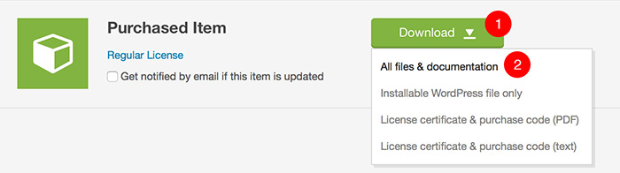
- Click on the Download button next to your purchased item
- Choose All files & documentation and download the zip file
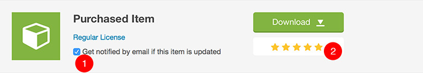
- Enable email notifications if you want to be informed when the new update is available
- If you like the theme, please don't forget to rate it 5*. Thank you!
Parent Theme Installation
When you unzip the downloaded file, you will see a bunch of folders. The most important one is the THEME folder which contains the installable theme .ZIP.

- THEME folder contains the installable theme .ZIP
Open your WordPress admin and navigate to Appearance / Themes
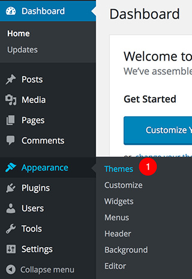
- You can manage themes under Appearance / Themes
Upload the installable townpress.zip file
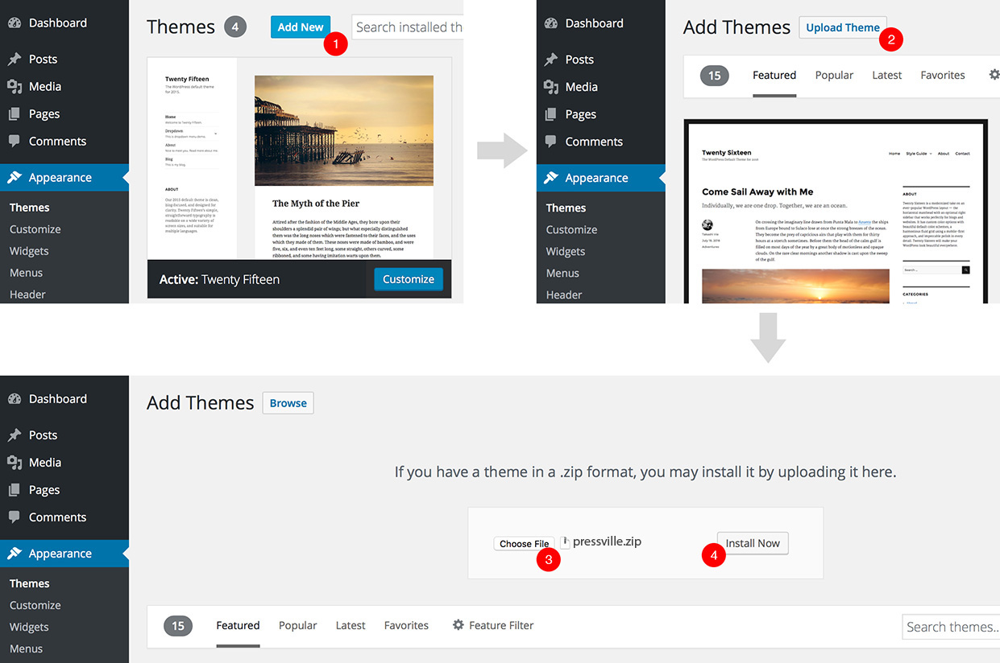
- Click on the Add New button
- Click on the Upload Theme button
- Choose theme .ZIP file
- Submit the file
Child Theme Installation
If you don’t know what a WordPress child theme is, please read this article in the WordPress codex. The article also explains how to create a child theme, but don't worry, the TownPress child theme is already included in the package.
This documentation assumes that you are running the child theme, so it is highly recommended to install it. The Child theme .ZIP can be found in Child Theme folder. Install it in exactly the same way as parent theme, described in previous steps.
Once you have both parent and child themes installed, you need to activate the child one.
Plugins Installation
Before we proceed to plugins installation, let's talk about them a little bit first. This theme comes prepackaged with several plugins. Basically, any major functionality (like events, directory, galleries, etc.) has a separate plugin. This has one big advantage - you can choose which one you need. For example, if you don't need the events functionality for your site (or you plan to use a 3rd party plugin for that), there is no reason to install the LSVR Events plugin. And same goes for LSVR Notices, LSVR Directory, LSVR Galleries, LSVR Documents and LSVR People plugins as well. But let's do a quick overview of all of those plugins so you can decide for yourself which ones you need:
- LSVR Framework - this plugin contains a lot of custom functionality used throughout the theme and LSVR plugins, such as custom metaboxes and customizer fields. You should definitely install this one.
- LSVR TownPress Toolkit - it contains the theme specific shortcodes (for example those used for the default front pages) and some custom widgets.
- LSVR Elements - this plugins adds some basic shortcodes and widgets like Definition List, Progress Bar and Feature.
- LSVR Notices - notices are basically stripped-down standard posts, ideal for short messages which you can display in the sidebar of your site. However, if you rather prefer to use standard WP posts for all types of news, long or short, don't install this plugin.
- LSVR Directory - it handles the Listing custom post type functionality and all its widgets. If you don't need the directory functionality or are going to use a 3rd party solution for that, don't install.
- LSVR Events - this plugin handles the Event custom post type functionality and all its widgets. If you don't need the events functionality or are going to use a 3rd party solution for that, don't install.
- LSVR Galleries - this plugin handles the Gallery custom post type functionality and all its widgets. If you don't need the galleries functionality or are going to use a 3rd party solution for that, don't install.
- LSVR Documents - this plugin handles the Document custom post type functionality and all its widgets. If you don't need the documents functionality or are going to use a 3rd party solution for that, don't install.
- LSVR People - this plugin handles the Person custom post type functionality and all its widgets. If you don't need the people functionality or are going to use a 3rd party solution for that, don't install.
- LSVR 3rd Party Toolkit - this plugin handles support for 3rd party plugins like Elementor and WPBakery Page Builder. Do not install this plugin if you are going to use the default WordPress block editor (Gutenberg) instead.
- Envato Market - it allows automatic theme updates for themes purchased from Envato Market. This is probably the easiest way to keep your theme up to date. However, it is not the only way. You can always just download the latest version directly from your account on Envato Market and either reinstall the theme or overwrite files via FTP. So if you prefer to update the theme manually, you won't need this plugin.
One last thing. You may be worried that so many plugins can have a performance impact on your site. The truth is that the number of plugins alone has no real impact on the performance. It's the way they are coded that's important. Since almost all of those plugins were coded in-house, their optimization and performance is fully under our control. Also, don't forget that the quality of your hosting plays a very significant role in overall performance of your site.
Bundled Plugins
Let's finally install some plugins. Once you've activated the theme, you should see a prompt message at the top of your admin informing you about recommended plugins.

- Click on Begin installing plugins
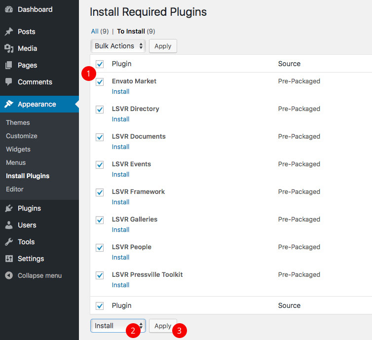
- Select either all plugins or just the plugins you need
- Choose Install
- Hit Apply
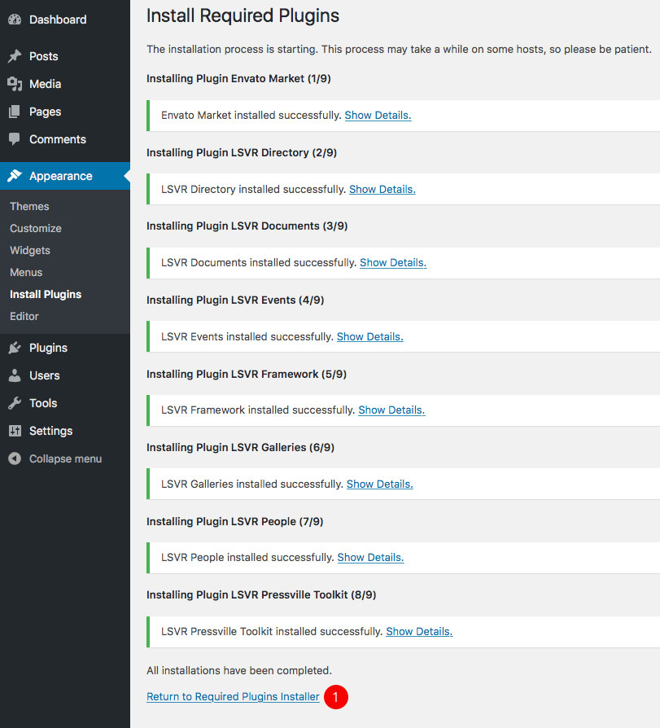
- Wait for plugins to be installed and then click on Return to Required Plugins installer
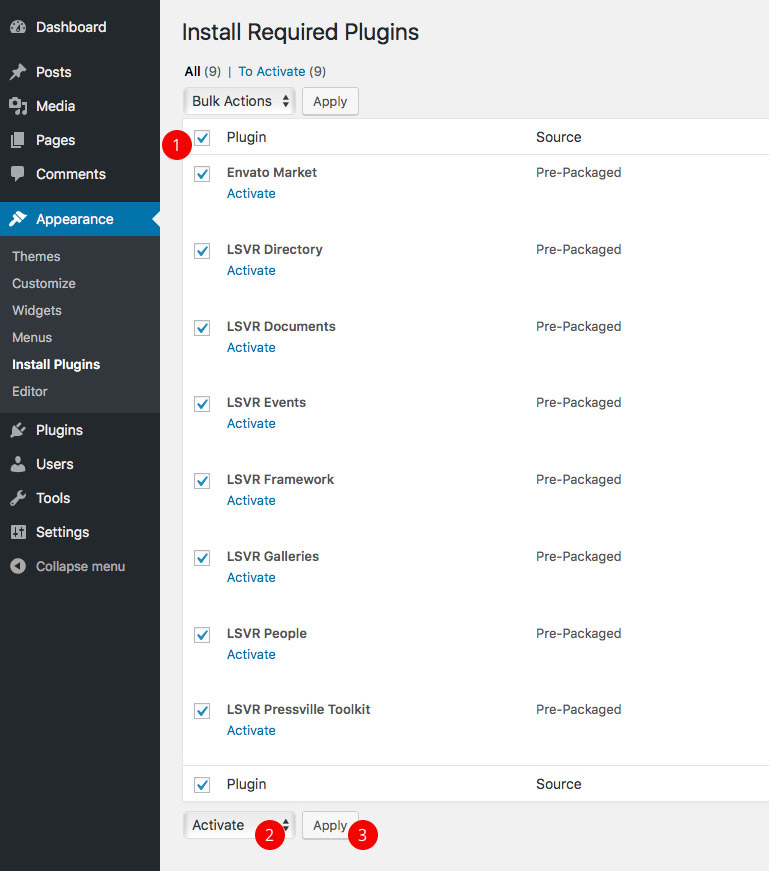
- Select all plugins
- Choose Activate
- Hit Apply
After you activate plugins, head to your Dashboard and that’s it. Plugins should now be installed and activated. Remember that all bundled plugins can be found in the Plugins folder in full package, so you can install any of those plugins manually anytime you need (via Plugins / Add New / Upload Plugin).
Bundled 3rd Party Plugins
- WPBakery Page Builder for WordPress (formerly Visual Composer) - this is an alternative for the native block editor (Gutenberg). It was the preferred page builder for this theme before the WordPress 5.0. Nowadays, unless you have some specific reasons, use the native block editor (Gutenberg) instead. Please note that this is a bundled premium plugin which has some limitations (this is the same for ANY theme which bundle this plugin). You can ingore any "license activation" notifications. You don't have to activate the plugin's license for it to work. You can find its installation .ZIP in the "Plugins" folder in the full package (js_composer.zip).
3rd Party Plugins
Here is a list of some useful 3rd party plugins. You can install them by typing their name in the search box under Plugins / Add New:
- Wordfence Security - very popular WordPress security plugin.
- bbPress - the most popular forum plugin. This theme comes with a custom styling for bbPress plugin.
- W3 Total Cache - a must-have caching plugin.
- Contact Form 7 - great plugin for creating simple contact forms. It was used to create a demo contact form as well.
- Intuitive Custom Post Order - allows you to reorder your posts and categories via drag & drop.
Demo Setup
Let start by saying that we do not recommend to import the demo data at all. Why? Because you are basically bloating your site with data you will eventually want to to get rid of sooner or later. You may be tempted to have your site to look like the demo quickly and then start customizing it to your needs, but you are actually making lot of unnecessary work for yourself. Our professional advice on how to build the site using this theme (or any other WordPress theme for that sake) is to read the documentation first (at least just browse the titles). Then (after you install the theme and all its plugins) head to Appearance / Customize and browse through all the available options to familiarize yourself with the theme. Then go back to the documentation, head to Post-Installation Setup and simply follow all the steps, read all chapters thoroughly and apply all that knowledge to your own site. That said, it is up to you of course. If you want to proceed with the demo import, read further.
Quick Demo Import
The quickest way to import the demo data is using the One Click Demo Import plugin. To install it, simply go to Plugins / Add New and type "One Click Demo Import" into the search field. Once installed and activated, go to Appearance / Import Demo Content where you can import content, customizer settings and widgets separately (they should be imported exactly in this order).
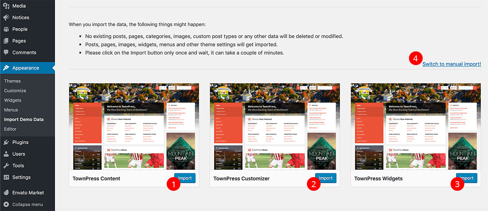
- Import TownPress content first
- Then import Townpress Customizer
- Import TownPress Widgets last
- If you have problmes with importing, you can try to upload all files manually. All import files can be found in the full package in the Demo Data folder (content.xml, widgets.wie and customizer.dat).
Once you've imported all three (content, customizer settings and widgets), continue here.
Manual Demo Import
If you want to have more control over imported data, you can do it manually. Demo data can be found in the Demo Data folder in full package.
Manual Content Import
You will notice there are several .xml files in the Demo Data folder. You can decide to import either all posts and pages or just specific post type posts.
To import the content, navigate to Tools / Import and click on WordPress. You may be prompted to install the Importer plugin if you don’t have it already. After you install and activate it, go back to Tools / Import / WordPress. Now choose which content you want to import. If you want to import everything, choose the content.xml file. If you want to upload events only, choose events.xml. You can of course do multiple imports if you want to import more than just one .xml file (for example events.xml and then documents.xml).
If you haven't installed all bundled plugins but are trying to import the content.xml file, you may notice several errors during the import process. Those are caused by the fact that posts related to missing plugins can't be imported (for example event posts without LSVR Events plugin installed). You can ignore those error messages, as they shouldn't affect the import of the other posts.
Manual Customizer Settings Import
You will need the Customizer Export/Import plugin to import customizer data. Once installed and activated, go to Appearance / Customize / Export/Import and upload the customizer.dat file from the Demo Data folder.
Manual Widgets Import
You will need the Widget Importer & Exporter plugin to import widgets data. Once installed and activated, go to Tools / Widget Importer & Exporter and upload the widgets.wie file from the Demo Data folder.
Contact Form Import
Contact form seen on the demo, which was created using the Contact Form 7 plugin, is not included in the main demo import files. You can import it manually under Tools / Import / WordPress using the cf7-contact-form.xml file from the Demo Data folder (don't forget to configure the form after the import).
After Demo Import
Regenerate Events
If you did quick import or manual import with events, head to Tools / Regen. Events and hit the Regenerate button. You won't be able to see any imported events on your front-end unless you do that. If you are experiencing any issues with this tool, you will have to resave each of the event posts one by one (at least those event posts you want to display).
Another important thing to keep in mind when importing events is that by default, events archive will show only the upcoming events. But some or all of the demo events may have already ended by the time you purchased the theme and did the import. The demo data may not be kept up to date with current demo site. The solution is to simply change the start/end dates for each event post you want to display on your site.
Front Page
You will need to set your front page and news page under Settings / Reading.
Menus and Widgets
Due to some limitations of the importing functionality, some sidebars and menus may not be set properly after the import. Just go to Appearance / Widget to configure your sidebars (for example you may want to set the menu of TownPress Menu widget to "Main Menu" in the Default Left Sidebar).
Menu Links
You may notice that some of the menu links won't work because they were saved as absolute URL. To make them work, either edit them manually under Appearance / Menus, or use a plugin to change them to the correct URL. Basically you need to change "http://localhost/wordpress/townpress-demo" to your site's URL.
Post-Installation Setup
General Settings
Your first post-installation steps should head into Settings / General.
Time Zone, Date Format and Time Format settings will be used to display date info for all post types (including event start and end dates), so make sure they are set correctly based on your locale.
Permalinks Settings
Now head to Settings / Permalinks and change Common Settings to Post name. You can also change URL slugs for all LSVR custom post types and their taxonomies below if needed.
Front Page / Blog Page
If you've imported the demo content, head to Settings / Reading and choose which pages should be used as your Front page and Posts page. If you haven't imported the demo content, then don't forget to come back to this option once you create your front page and blog pages. More info.
Managing Menus
If you already have some pages / posts on your site (for example via importing demo content), you should check out Appearance / Menus to manage your site's menus.
Media Settings
Head to Settings / Media and change the settings to the following values:
- Thumbnail size - 300x300 (crop enabled)
- Medium size - 600x600
- Large size - 1024x1024
If you already have some images on your site, use a 3rd party plugin to regenerate new image sizes based on the settings above.
Map Settings
If you are going to use the Directory or Events functionalities via bundled LSVR plugins, or a header map, you will need to choose a maps provider for built-in maps to work. You can do that under Appearance / Customize / Map Settings. Please note that some providers require an unique API key for maps to work.
OpenWeatherMap.org API Key
If you are going to use the TownPress Weather widget, you will need a OpenWeatherMap.org API Key, which you can insert under Appearance / Customize / Misc.
Typography
If your site is running in a language other than English, you should check out Appearance / Customize / Typography and set the Font Subsets option accordingly. Please note that not all font families support all font subsets.
You may also notice that not all Google Fonts are available - we handpicked only the most popular ones. If you need to use font which is not available, disable Google Fonts (uncheck Enable Google Fonts option) and use some 3rd party plugin instead.
Content Editing
TownPress comes with a bunch of custom post types. Working with them is very similar to working with standard WordPress posts.
Standard Posts and Pages
Posts and pages are part of the core WordPress functionality. The best place to learn more about them is the WordPress Codex.
- Global theme-specific posts settings can be changed under Appearance / Customize / Standard Posts.
- Learn more about posts
- Learn more about pages
Directory Listing
- Default directory URL is yoursite.com/directory. You can change it under Settings / Permalinks.
- You can manage your listing posts under Directory.
- The settings of a particular listing can be edited via the Listing Settings panel located under the content editor.
- Featured Image of the listing will be used as a map thumbnail.
- You can add images to your listing via the Listing Gallery panel located under the content editor.
- Add schema.org metadata via the Listing Metadata panel located under Listing Settings.
- Global directory settings can be changed under Appearance / Customize / Directory.
- This post type comes with several custom widgets which you can find under Appearance / Widgets.
Event
- Default events URL is yoursite.com/events. You can change it under Settings / Permalinks.
- You can manage your event posts under Events.
- The settings of a particular event can be edited via the Event Settings panel located under the content editor.
- Global events settings can be changed under Appearance / Customize / Events.
- This post type comes with several custom widgets which you can find under Appearance / Widgets.
Gallery
- Default galleries URL is yoursite.com/galleries. You can change it under Settings / Permalinks.
- You can manage your gallery posts under Galleries.
- You can add images to your gallery via the Gallery Images panel located under the content editor.
- Global galleries settings can be changed under Appearance / Customize / Galleries.
- This post type comes with several custom widgets which you can find under Appearance / Widgets.
Document
- Default documents URL is yoursite.com/documents. You can change it under Settings / Permalinks.
- You can manage your document posts under Documents.
- Each document post can contain multiple file attachments which can be added via the Document Settings panel located under the content editor.
- If all your document posts contain only attachments and no real text content, you may want to switch your document archive layout to Attachment View under Appearance / Customize / Documents.
- Global documents settings can be changed under Appearance / Customize / Documents.
- This post type comes with several custom widgets which you can find under Appearance / Widgets.
Person
- Default people URL is yoursite.com/people. You can change it under Settings / Permalinks.
- You can manage your person posts under People.
- Global people settings can be changed under Appearance / Customize / People.
- This post type comes with several custom widgets which you can find under Appearance / Widgets.
Notice
- Default notices URL is yoursite.com/notices. You can change it under Settings / Permalinks.
- You can manage your notice posts under Notices.
- Global notices settings can be changed under Appearance / Customize / Notices.
- This post type comes with several custom widgets which you can find under Appearance / Widgets.
Customization
Front Page
The following tutorial assumes that you want to create a front page similar to the "Classic Home" from the demo. The preferred way to create a front page is using the native WordPress block editor (Gutenberg). Alternatively, you can use the WPBakery Page Builder or Elementor plugin. All elements and their respective options mentioned in this tutorial are available there as well (however it is highly recommended to use the Gutenberg, unless you have some very specific reason not to).
- This demo page contains a TownPress Sitemap block which requires a standard WordPress menu to work. To create such menu, head to Appearance / Menus and create a simple two dimensional menu. If you've never created a WordPress menu before, please head to WordPress Codex.
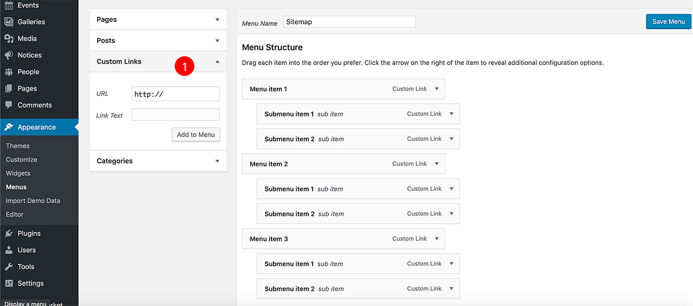
- You can add custom links to link non-standard pages and posts (for example http://yoursite.com/events for events archive)
- Once your menu is ready, let's create a new page under Pages, or edit an existing one.
- Type the title - it can contain some basic HTML tags.
- Set its page template to Not Boxed (under Page Attributes).
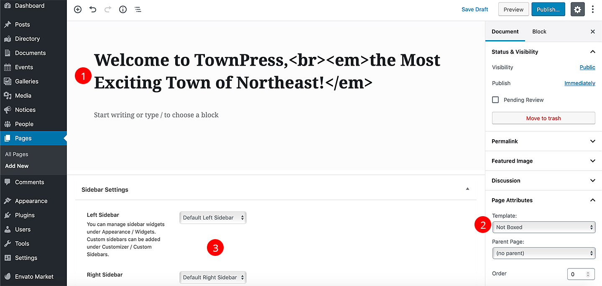
- Insert title. Some basic HTML is allowed
- Set page template to "Not Boxed"
- You can assign left and right sidebars. Learn more
- Display list with all blocks by clicking on the "plus" button in the top left of the interface.
- You can hide/expand the categories. Add the TownPress Sitemap block from TownPress category.
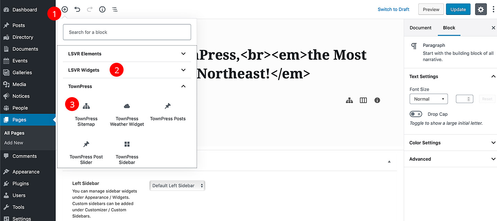
- Display list of blocks
- All blocks which come with the theme can be found under LSVR Elements, LSVR Widgets and TownPress categories
- Add the TownPress Sitemap block
- Once the block is loaded into the content, click on it to display its settings in the right sidebar.
- The most important option to set here is the Menu. Use it to select the menu you've created in the first step. Change any other options as you like.
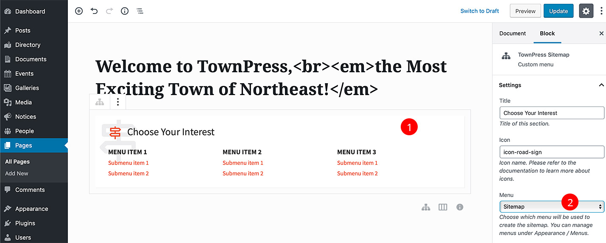
- Click on the block
- Choose the menu you've created in the first step
- The second block we will add is the TownPress Posts. Insert it in the same fashion as the previous one.
- This block displays standard WordPress posts so make sure you already have some.
- Once you insert it, click on the block and set its options to your liking in the right sidebar.
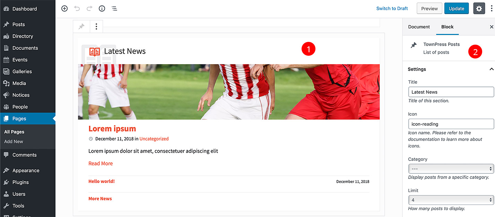
- Click on the block
- Change the options to your liking
- Once you are done, save your page and set it as your front page under Settings / Reading.
Colors
Theme colors can be managed under Appearance / Customize / Colors. You can either choose from predefined color schemes, pick your custom colors or create your own color scheme. The difference between Custom Colors and Custom Scheme is that the latter is much more involved and requires some coding. On the other hand, it gives you more freedom and it is the recommended way for customizing theme's colors.
Since the Predefined Scheme and Custom Colors options should be pretty much self-explanatory, let's describe the process of creating your own custom color scheme.
- Open http://yoursite.com/wp-content/themes/townpress/assets/sass/skins/default.scss file. It should open directly in your browser, but some browsers may download it on your disk instead.
If you are not able to access the file on your own installation, simply unpack the townpress.zip installation file (please see the Theme Installation chapter to learn how to obtain it) and you will find the default.scss file under assets / sass / skins folder. - Copy all the code from that file to any text editor. If your browser downloaded your file, open that file in the text editor. You can use for example Notepad++ for Windows or Brackets for Mac, but any basic text editor (for example Windows Notepad) should do.
- Make your changes. Basically you just need to change color variables at the top of the file. The most important one is $accent1 variable on line 28. By default, it look like this:
$accent1: #ec5237; // primary accent color
There are many online tools where you can generate a hex code for your color, for example colorpicker.com. Just change #xxxxxx to the hex code of your custom color (don't forget that it has to start with the # sign). Feel free to change values of other color variables in the file as well.
- Once you've made your changes, copy the whole code and paste it to the SASS column on sassmeister.com (or any other online SASS to CSS convertor). Please note that any typo in your syntax may lead to an error.
- Copy the generated code from the CSS column.
- Make sure the child theme is active under Appearance / Themes.
- Go to Appearance / Editor, set Select theme to edit: to TownPress Child and paste your generated CSS after the "/* Add your custom css after this comment */" comment.
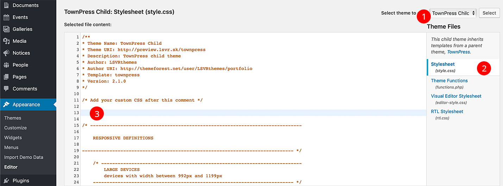
- Make sure TownPress Child theme is selected
- Select the stylesheet file
- Put your CSS here and save your changes
- Next, repeat all the steps but now with the default editor color scheme file - http://yoursite.com/wp-content/themes/townpress/assets/sass/skins/default.editor.scss. Again, if you are not able to access it on your installation, unzip the townpress.zip file and you will find it under assets / sass / skins folder.
- There is one difference though, the final generated editor CSS code have to be pasted into editor-style.css file instead (which is also accessible under Appearance / Editor).
- Last step: go to Appearance / Customizer / Colors, switch Set Colors By option to Custom Scheme and save.
Translation
If you are going to use this theme in any language other then English, you will need to translate it. The important part is that you need to translate the theme and all LSVR plugins you are using. Most of the translatable text is part of the admin area, so if you plan to translate only the front-end, there won't be that much text to translate.
There are two general approaches to translation. You can either use a 3rd party plugin, or do it the old-fashioned way via the Poedit software (recommended). If you prefer the plugin approach, check out their respective documentations on how to do that. We will describe the manual process of translation via Poedit.
Before we begin, download and install Poedit to your computer.
Theme Translation
- Make copy of the townpress.pot file from the theme's languages folder. You can either just unzip the townpress.zip file (which you got from full package) on your local computer and find the .pot file there, or you can use FTP to access your WP installation and copy the .pot file from the wp-content/themes/townpress/languages folder.
- Paste the file anywhere on your computer and rename it to townpress-xx_YY.po. "xx" stands for your language code and YY for country code (for example "townpress-de_DE.po" for German). Notice how the file extension changed from ".pot" to ".po".
- Open your .po file in Poedit, make your changes and save the file. This will create a new file - townpress-xx_YY.mo.
- Copy both townpress-xx_YY.po and townpress-xx_YY.mo to your WP installation under wp-content/languages/themes and that's it.
Plugins Translation
The whole process is very similar to theme translation, you just need to do it separately for each plugin. Let's translate the LSVR Events plugin for example (but it is the same for all LSVR plugins).
- Make copy of the lsvr-events.pot file from the LSVR Events plugin languages folder. You can either just unzip the lsvr-events.zip file from the Plugins folder (which you can find in full package) on your local computer and find the .pot file there, or you can use FTP to access your WP installation and copy the .pot file from wp-content/plugins/lsvr-events/languages folder.
- Paste the file anywhere on your computer and rename it to lsvr-events-xx_YY.po. "xx" stands for your language code and YY for country code (for example "lsvr-events-de_DE.po" for German). Notice how the file extension changed from ".pot" to ".po".
- Open your .po file in Poedit, make your changes and save the file. This will create a new file - lsvr-events-xx_YY.mo.
- Copy both lsvr-events-xx_YY.po and lsvr-events-xx_YY.mo to your WP installation under wp-content/languages/plugins and that's it.
Icons
Check out the list of all built-in icons here.
If you want to add an icon into your content, use the [lsvr_icon] shortcode (LSVR Elements plugin is required for this shortcode to work).
More icons can be added via 3rd party plugins.
Code Customization
Code custimization is a broad topic which goes far beyond the scope of this documentation. The best place to start learning about the developer side of the WordPress is the WordPress Codex. Most of the knowledge needed to customize the theme is not theme-specific and can be applied to any theme. There are however some specifics which can come handy when you decide to customize this particular theme.
99% of the frontend code of this theme can be customized very easily by overriding the specific template files via a child theme. Apart from the basic WordPress theme files like header.php, footer.php, etc (you can read more about WordPress template hierarchy on the WordPress Codex), you will find many theme-specific templates inside template-parts folder. Just copy any of those files to your child theme (preserve the relative path) and edit them there.
However, the code for widgets, shortcodes and blocks is not present in the theme folder. Code for all those elements resides in plugins. The good news is that frontend code of those elements is created using template files as well. You just need to find out which plugin contains the widget/shortcode you want to edit and copy its template file to your child theme under the correct folder using this formula:
For widgets:
[plugin-folder-name]/templates/widgets/[widget-template-file]
For shortcodes (and blocks):
[plugin-folder-name]/templates/shortcodes/[shortcode-template-file]
For example, if you want to override the code for the LSVR Featured Post widget, open wp-content/plugins/lsvr-elements/templates/widgets folder and copy post-featured.php file into your child theme folder under lsvr-elements/templates/widgets folder.
How To
Display Old Events
To display events within a specific date range use URL like this:
yoursite.com/events/?date_from=2018-08-01&date_to=2018-12-31
To display all past events, use the URL like this:
yoursite.com/events/?period=past&order=desc
How To Update The Theme
The easiest way to update the theme is to use Envato Market plugin.
Alternatively, you can download the installable townpress.zip file from your ThemeForest account / Downloads and then either unzip it and upload it under wp-content / themes via FTP (overwrite the existing townpress folder), or upload the file via admin under Appearance / Themes / Add New / Upload Theme (you will have to deactivate and remove your current version of the theme first).
How To Update Bundled Plugins
Once you've updated the theme you should see an admin notification which will lead you through the process of updating the bundled plugins (if there are any which needs updating).
Alternatively, you can download the complete theme package from your ThemeForest account / Downloads, unzip it and check out the changelog.txt file to see which plugins were updated in the recent version. You will find all installable plugin files in the Plugins folder. Now, either unzip each plugin file you want to update and upload them under wp-content / plugins via FTP (overwrite the existing folders), or upload each .zip file via admin under Plugins / Add New / Upload Plugin (you will have to deactivate and remove your current versions of those plugins first).
How To Add Post Excerpt
Excerpt is a short text which can be displayed on post archive pages or in some widgets instead of the full post content. You can add excerpt for standard posts and some custom post types.
If you are using the WordPress block editor (Gutenberg), you can add excerpt in the right panel when editing a post (make sure you are switched to Document tab at the top of the panel). If you are not seeing the Excerpt field, click on "dots" icon in upper right corner to enable the field.
If you are NOT using the block editor (for example when you are using the Classic Editor plugin), then while editing a post, click on Screen Options in upper right corner, check Excerpt and scroll down to see the Excerpt field under the editor.
How To Setup Contact Form
To add a contact form similar to one seen in the demo site, first install and activate the Contact Form 7 plugin. Then download and unzip the full theme package from your ThemeForest account / Downloads (if you haven't already) and upload the cf7-contact-form.xml file from the Demo Data folder under Tools / Import / WordPress in your admin (you may be prompted to install the additional plugin during the process). Please follow the official documentation on how to properly configure the plugin.
How To Setup Forum
The forum seen on the demo site was created using the bbPress plugin. Please follow the official documentation to learn how to configure it. You can download the dummy data here.
How To Reorder Posts and Categories
The easiest way to do it is to use Intuitive Custom Post Order plugin. Once instaled and activated, head to Settings / Intuitive CPO and check which post types and taxonomies you want to enable this functionality for. After that, you will be able to reorder them via simple drag & drop in your admin.
Elements
Following elements are used primarily to build the front page. If you are in a need of some basic design elements like accordions or tabs, search the official WordPress plugins repository for some additional 3rd party plugins.
TownPress Posts
This shortcode displays standard (blog) posts.
[lsvr_townpress_posts title="Latest News" icon="icon-reading" category="123" limit="8" featured_limit="1" more_label="More News" id="my_unique_id"]
- title
- Element title.
- icon
- Element icon. Check out the list of icons.
- category
- Category ID or slug to pull posts from.
- limit
- Number of posts to display.
- featured_limit
- How many posts will be displayed as featured - with excerpt and featured image.
- more_label
- Label for a "More" link which links to a post / category archive.
- id
- Unique ID which can be used for applying custom CSS to this element.
TownPress Post Slider
This shortcode displays standard (blog) posts as a slider.
[lsvr_townpress_post_slider category="123" limit="8" align="left" show_excerpt="true" autoplay="5" overlay_opacity="90" id="my_unique_id"]
- category
- Category ID or slug to pull posts from.
- limit
- Number of posts to display.
- align
- Alignment of slide content.
- show_excerpt
- Display post excerpt.
- autoplay
- Time between slide change in seconds. Set to 0 to disable autoplay.
- overlay_opacity
- Opacity of overlay element. Set to 0 to make it completely transparent.
- id
- Unique ID which can be used for applying custom CSS to this element.
TownPress Sitemap
This shortcode displays a custom menu. Menu can be created under the Appearance / Menus.
[lsvr_townpress_sitemap menu_id="123" columns_count="4" id="my_unique_id"]
- menu_id
- ID of the menu which will be used. To get the menu ID, head to Appearance / Menus, switch to your menu and copy the value of the "menu" attribute from the page URL
- columns_count
- How many columns will be used to divide the sitemap.
- id
- Unique ID which can be used for applying custom CSS to this element.
Icon
This shortcode displays a simple icon.
[lsvr_icon icon="icon-check" id="my_unique_id"]
- icon
- Icon to display. Check out the list of icons.
- id
- Unique ID which can be used for applying custom CSS to this element.
TownPress 1.x
Please note that TownPress 1.x and 2.x+ are NOT compatible. If you want to update your existing site which runs version 1.x to version 2.x+, you will have to basically configure the whole site from the scratch. That applies to theme options, menus, widgets, any custom theme's elements or shortcodes, but most importantly to custom posts (events, documents, galleries, notices).
Redux Framework and and LSVR Toolkit (TownPress) plugins are no longer supported in 2.x+, so if you decide to update to 2.x+, feel free to remove those plugins.
You can find the latest version of TownPress 1.x in the full package in "Legacy / TownPress v1" folder.